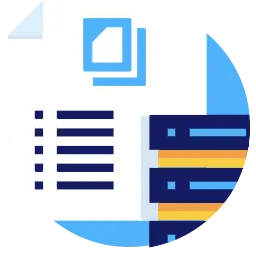

Konsultasi bidang kearsipan dan pengelolaan dokumen secara terpadu dan menyeluruh, yaitu pemberkasan dokumen, manajemen arsip statis, managemen arsip dinamis, tata persuratan, pengembangan sistem informasi kearsipan, pengembangan sistem managemen rekod dan penilaian, serta retensi arsip.
Jasa Konsultasi Kearsipan
PrimaDoc melayani konsultasi bidang kearsipan dan pengelolaan dokumen secara terpadu dan menyeluruh yang terdiri dari pemberkasan dokumen, manajemen arsip statis, manajemen arsip dinamis, tata persuratan, pengembangan sistem informasi kearsipan, pengembangan sistem manajemen rekod, penilaian dan retensi arsip, dsb.
Jasa Manajemen Kearsipan
 Manajemen kearsipan yang baik akan berdampak pada perkembangan perusahaan yang baik pula. PrimaDoc membantu perusahaan Anda dalam proses pembenahan dan penataan arsip secara tepat, cepat dan efisien sesuai dengan standarisasi baik fisik dokumen maupun alur informasi.
SOP Kearsipan
PrimaDoc membantu merancang Standard Operational Procedure (SOP) untuk membuat standarisasi kerja kearsipan dan kejelasan tahapan langkah dalam pengelolaan arsip sesuai dengan kondisi perusahaan Anda. SOP ini menjadi hal penting untuk mengawali kegiatan tata kearsipan yang lebih baik dan akan membantu kelancaran kegiatan administrasi serta memudahkan Anda untuk mengakses kembali.
Jasa Pelatihan Kearsipan
 Pelatihan kearsipan bertujuan untuk memberikan pengetahuan dan pemahaman kepada SDM dalam mengelola dokumen atau arsip dengan benar, efektif dan efisien serta akurat sesuai dengan tujuan, target, visi dan misi perusahaan. PrimaDoc dapat membantu perusahaan Anda dalam mempersiapkan staf yang handal untuk mengelola arsip atau dokumen perusahaan Anda.
Pelatihan kearsipan bertujuan untuk memberikan pengetahuan dan pemahaman kepada SDM dalam mengelola dokumen atau arsip dengan benar, efektif dan efisien serta akurat sesuai dengan tujuan, target, visi dan misi perusahaan. PrimaDoc dapat membantu perusahaan Anda dalam mempersiapkan staf yang handal untuk mengelola arsip atau dokumen perusahaan Anda.